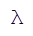

|
LambLisp 01 Red Fox Alpha
Lisp For Real-Time Control
|
|
LambLisp 01 Red Fox Alpha
Lisp For Real-Time Control
|
LambLisp by Copyright 2025 Frobenius Norm LLC.
LambLisp is a real-time implementation of the Scheme dialect of the LISP programming language. Scheme is governed by standards known as Scheme R5RS and Scheme R7RS. LambLisp is designed primarily to Scheme R5RS, with some features from Scheme R7RS and Common Lisp that aid in development of real-time embedded control systems.
LambLisp provides a robust and scalable Hardware Abstraction Layer (HAL). The LambLisp HAL allows convenient interoperability with existing device drivers or other existing C/C++ libraries.
LambLisp is now running on Espressif ESP32 using the tools from platformio. LambLisp has a built-in Arduino-style hardware abstraction layer, a standard way to introduce new capability using existing C++ code, and many other features focused on embedded controls.
A hardware demo is available, built on the ESP32-based Freenove 4WD Car Kit, programmed as a simple autonomous vehicle. The vehicle demonstrates a variety of hardware control techniques, including time management for high throughput and low latency.
A Linux version of LambLisp is also available. Linux is not a real-time operating system, but it will allows use of LambLisp's other advanced features, such as tail-recursion, adaptive incremental garbage collection, first-class hierarchical dictionaries and first-class macros. simple integration with existing C/C++ libraries or hardware drivers such as I2C devices and CUDA.
For more information:
Read the LambLisp manual online at
https://wawhite3.github.io/LambLispRT-v01-linux_x86_64/html/index.html
Find the LambLisp manual in PDF at
https://wawhite3.github.io/LambLispRT-v01-linux_x86_64/LambLisp.pdf
Download the full LambLisp repositories from
https://github.com/wawhite3/?tab=repositories&q=LambLispRT
Visit the developer Frobenius Norm at https://frobeniusnorm.com.
LISP is the original language of artificial intelligence, and is the second-oldest programming language still in use (after Fortran). It was designed for symbolic reasoning rather than computation. From the theoretical base beginning about 1960, LISP quickly grew into a practical language with several well-supported variants. LISP and LISP programs were always uppercase; the 8-bit byte had not yet been standardized and text was often packed into 6-bit chunks with no room for lower case.
Today, approaching the mid-21st century, Lisp is active in many variants: SKILL from Cadence Design, AutoDesk Lisp, ChezScheme from Cisco, and others. Like LambLisp, these are often tailored to solve problems in a specific domain, and descend from either Scheme or the earlier Common Lisp. LambLisp is optimized for intelligent real-time control of physical processes.
The LambLisp bibliography contains a mini-history of automated symbolic reasoning since the Renaissance. It contains work beginning with Isaac Newton and Bertrand Russell, through to Alonzo Church, John McCarthy, and Edsger Dijkstra, as well as many less famous and more recent authors. In the 21st century development of automated symbolic reasoning continues, with recent publications on already well-trod topics as real-time garbage collection and macro expansion. New approaches to artificial intelligence have created renewed interest in systems (like Lisp) that offer provable correctness and traceable results.
Any papers cited in the LambLisp documentation can be found in the bibliography at
https://github.com/wawhite3/LambLisp-Bibliography
Additionally, these books provide excellent exposure to many of the issues encountered when developing a Lisp programming system:
Structure and Interpretation of Computer programs (Abelman and Sussman). Known as SICP, it was a standard Computer Science textbook for many years.
Lisp in Small Pieces (Quiennec). Another excellent textbook, which drew lessons from SICP and examines more topics and more detail.
The Art of Computer Programming (Knuth). Written in the pre-C era, TAOCP is an encyclopedia of algorithms that remain foundational to modern computer science.
Lisp invented, aggregated, or evolved all the important techniques used in programming languages today:
| Some Lisp Innovations |
|---|
| stepwise code optimization |
| interactive computing |
| just-in-time compilation |
| on-the-fly code updates |
| macro expansion |
| polymorphism & "duck" typing |
| object systems |
| lexical and dynamic scoping |
| tail recursion |
| garbage collection |
| parameter passing modes |
| exception handling |
Lisp offers tremendous scalability. At the micro end, Lisp makes an ideal assembly language, with a simple prefix notation that can transform directly into machine instructions. At the macro end, new functions can be defined and combined dynamically in a way not possible in C++ or Python. These new functions can be the results of substantial analysis performed elsewhere (call it AI), putting it at a scale billions of time larger than the assembly language application.
Lisp is interactive and Lisp programs can be modified on-the-fly, while they are running. Programs can evolve. In other languages, predefined parameters may be tuned during operation, but the code does not change. In Lisp, the code may continually evolve, and provides Lisp with the power of induction and of continuous improvement.
The concept of interactive computing applies not only to interaction with people. Machine-to-machine interaction is an inherent behavior of the interactive nature of Lisp. In LambLisp-based control systems new algorithms can be developed off-system, and then downloaded without interrupting the controlled process. Today, those off-system resources can be AI assets in the cloud, and LambLisp can be the target of AI-generated code.
An important part of the attraction of Lisp is the simple syntax, based on just a few rules that are compact and fast on any processor, even in 1960. This led to a variety of Lisp dialects; two of the most important are Common Lisp and Scheme. Common Lisp is in the "large Lisp" category, although there are many partially-compatible subset implementations.
Scheme is in the "medium-size Lisp" category, and was a purposeful attempt to distill the fundamental behaviors of Common Lisp into a simpler set.
In the lifetime of Lisp, many processors have come and gone. Today ARM-based processors have scaled to be competitive in many control applications. There is a wide variety of boards and modules available, and plenty of inexpensive parts running on the commonly available I2C bus. Today's 32-bit microprocessors present an ideal platform for Lisp real-time control.
There are some features that make LambLisp special in the Lisp menagerie.
LambLisp has been optimized to solve real-time control problems, using a variety of techniques described elsewhere in this document. The primary breakthroughs in real-time Lisp were published in Dijkstra 1976, and elaborated in Yuasa 1990. These papers describe how to eliminate the long pause required for stop-the-world garbage collection.
LambLisp allows continuous interaction with supervisory controllers. In turn, this allows the use of off-system rescources, such as AI systems, to monitor embedded performance, tune existing parameters, and install new algorithms on-the-fly without loss of control.
LambLisp also adds many enhancements for real-time control, such as fast type-specific operations and Arduino-compatible API.
LambLisp substantially conforms to the Scheme R5RS specification. Scheme is widely taught and there is plenty of information online. There are also many desktop versions of Scheme available for study.
LambLisp's open API allows existing code to be easily incorporated into the Lisp environment. These libraries require only a thin dispatch layer and run at at the same full speed as any other LambLisp native function.
There are a few embedded micro-Lisps but they require new libraries for each supported device or feature. The same can be said of the micro-Pythons. The micro-Lisps also have evolved on the tiniest processors, and therefore provide a small Lisp core but no conformance to any particular specification.
LambLisp can incorporate existing C/C++ libraries unchanged, and has a built-in interface to Arduino-style I/O, including I2C (Wire) and WiFi.
Lisp behavior depends on a continuous supply of memory, which must be reclaimed when no longer in use, and then later reissued. The reclamation process is called garbage collection or just GC.
Until the 1990s, Lisp could not be applied to real-time control applications due to unpredictable lapses in control during GC. While GC was occurring, the controlled application was left unsupervised. This problem was solved by Taichi Yuasa, based on earlier work by Edsger Dijkstra. Yuasa provided a provably correct solution that divided GC into increments, and provided formulas for the key metrics in a correct implementation. Yuasa's solution was implemented in Kyoto Common Lisp.
Yuasa's solution appeared during the era of Lisp Machines, which were designed to execute compiled Lisp programs. Lisp machines were overtaken by Moore's law and the rapid scaling of x86 processors. The Lisp Machine Industry collapsed during the AI winter of the 1990s and the subsequent dot-com bust. The x86 (or its direct competitors) became the minimum required for running Lisp.
In LambLisp real-time guarantees are provided by Yuasa's GC formula, and LambLisp realizes additional performance gains with GC idle-time look-ahead. LambLisp continuously calculates the GC start threshold (Yuasa's M metric) and allocates additional memory when required (Yuasa's N metric). Additionaly, LambLisp implements idle-time look-ahead, whereby application idle time can be applied to garbage collection; later during peak loads GC passes can be omitted altogether.
LambLisp's open API allows new language features to be implemented in C++ and easily incorporated into the Lisp runtime environment. There is no special "foreign function interface" as in other Lisps; simply write a function with the correct signature, and assign it a value in the LambLisp runtime environment. This is how all the LambLisp native functions are implemented; any new functions added are not "foreign" and do not suffer a performance penalty. This design is also useful for writing and distributing proprietary code.
In C++-based systems, half of the persistent storage must be devoted to over-the-air updates. In this case, an entire new program image is downloaded before the existing image is marked obsolete. After, that, the storage for the old image is still required for future OTA updates, but otherwise is not used again. A reboot is required to start the new image.
With LambLisp, OTA updates can be incremental. By updating definitions in the execution environment, new LambLisp code runs as soon as it appears. The memory used by the obsolete code will be reclaimed. No reboot is required after an update.
A part of the success of Python has been its pervasive use of hash tables. Hash tables are also used extensively in LambLisp, supporting the representation of environments, dictionaries, and objects. LambLisp dictionaries are hierarchical, providing a parent/child relationship between hash tables. The internal execution environment of LambLisp is a dictionary.
Much of LambLisp behavior is implemented in the runtime system, a collection of compiled routines that perform the basic operations defined in the Scheme specification. The process of compiling begins with "expanding" those symbols whose values are functions. In this case, "expanding" means to replace the symbol with its value (a procedure) wherever appropriate. This can be done case-by-case; when a LambLisp program is fully transformed this way, execution becomes a series of linked C++ function calls. The downside to this is that debug information is lost.
Lexical scoping is what most programmers are already familiar with. C/C++ and Python programmers will discuss local variables and global variables; these are typical in lexical scoping. Some Lisps (but not Scheme or LambLisp) have dynamic environments and special variables, which do not follow the familiar lexical convention. In Scheme and LambLisp there is only lexical scoping.
Tail calls allow many problems to be solved recursively without a growing stack, allowing compact, inductive code in place of iteration. Continuation-passing style is a programming idiom on which the next step in a computation is always an extra argument to every procedure. That "next step" is called a continuation. When a procedure has determined its result, instead of returning, it tail-calls the continuation. This is an elegant way to solve many problems by induction.
Procedures are created as the result of evaluating a lambda expression. They get created, stored, and destroyed, just as any other value. They can be passed as arguments to other procedures. In LambLisp the nlambda and macro expressions are specialized procedures.
New LambLisp native functions can be written in C++, and then objects created by C++ constructors can be passed to LambLisp for processing when required. These objects can also (optionally) get automatically garbage collected when LambLisp has finished with them. One of the design goals of LambLisp is convenient scalability between C++ and Lisp layers.
| LambLisp Features |
|---|
| Substantial conformance to Scheme R5RS specification. |
| Additional features from Scheme R7RS and Common Lisp specifications. |
| Optimized for 32-bit microprocessor control applications (ARM, ESP32). |
| Available for Linux. (with limited hardware I/O) |
| High-level implementation of language primitives for compact high performance. |
| Compiler with just-in-time and incremental features for optimized size/speed. |
| Arduino-compatible interfaces for digital & analog I/O, I2C, SPI, WiFi, etc. |
| Easy addition of manufacturer-provided C/C++ hardware drivers. |
| Easy integration of application-specific C++ functions. |
| Leverage existing Arduino skill set, gcc-based tool chain, C runtime. |
| Adaptive incremental garbage collector for fast, uniform loop times. |
| Selectable run-time packages (math, ethernet etc) to control program size. |
| Virtual memory capability from remote or local storage. |
| Incremental code updates over-the-air without pausing control or rebooting. |
| Elements of Lisp |
|---|
| Spaces are separators between expressions. |
| If an expression starts with (, then it is a list and requires a matching ). |
| Otherwise, the next group of characters, up to a space, is a symbol. |
| In both cases the expression is called a symbolic expression, or S-expression. |
| A list contains 0 or more S-expressions between its parenthesis, as in () (foo) (1 (2 three) 4). |
| There is an environment that associates symbols with values. |
| There is a small foundational set of procedures that accept arguments and return new S-expressions. |
| An evaluator continuously reads S-expressions, evaluates them, and returns the result. |
| If the evaluator encounters a list, the first item in the list must be a procedure and it will be applied to the arguments provided. |
In the Lisp world, any item not a list (or more accurately a pair) is called an atom. Numbers, strings, and vectors all are atoms. Perhaps surprisingly, the foundational Lisp does not require these, as they can be implemented using purely symbolic programming. There is an important distinction here between the mathematical foundations of Lisp, the programming language called Lisp, and implementations of Lisp.
Many areas of mathematics have only thrived after a notation was introduced to facilitate reasoning about it. Think of sine, cosine, the square root symbol, integral and differential calculus, matrix algebra, etc.
Likewise, Lisp established a small set of symbols and their behavior when encountered in a program. In the days of pen and paper, greek letters would have been used, as they were in the lambda calculus from which Lisp inherits its intellectual grounding and the lambda operator. In the teletype era, only the typewriter symbols were available.
Lisp was created to perform symbolic reasoning. Lisp's elements of reasoning about symbolic expressions:
| Lisp symbolic expressions | Description of operation |
|---|---|
| symbols | A sequence of non-spaces, such as x, 2day, and next<>thursday. Non-space characters may appear anywhere in a symbol. |
| #f and #t | #f represents false, while #t represents true. Anything not false is considered true. |
| () or NIL or nil | A singleton that is an atom and a list, but not a pair. Used as a sentinel to terminate lists. |
| lists | A set of parenthesis enclosing 0 or more symbols or lists, as in (1-element-list) and (nested (nested () list) lists) |
| environment | An association between symbols and values. Often implemented as a list of pairs: ((x 12) (2day 42)). |
| if | Execute test and choose from alternate code paths. |
| eq? | Accepts 2 arguments and returns false if they are not the same S-expression. |
| define | Update or install new (symbol value) pair in the current environment. |
| set! | Update existing (symbol value) pair in the current environment. |
| lambda | Creates a procedure; i.e., a set of formal parameters, a body of Lisp code, and the environment in which is was defined. |
| eval | S-expression evaluation; if a list, the procedure at the front of the list is applied to the remaining arguments. |
| apply | Execute the body of a lambda, in its original environment enhanced with the arguments to apply paired to the procedure's formal parameters. |
| quote | Prevent evaluation of something that would normally be evaluated. |
| macro | A procedure that accepts its arguments unevaluated, i.e., as source code, and returns new source code to be executed in its place. |
Some terms should be defined in the Lisp context; for example operators, functions, procedures, macros are related concepts, but not identical.
| Important axiomatic behaviors |
|---|
| The word operator is used for any S-expression found in the first position of a list at evaluation time. |
| An operator must resolve to a procedure before it can be applied, i.e., the operator position may be occupied by a symbol or other expression. |
| The word function is ambiguous and may refer to a lambda expression or a procedure. |
| A lambda expression defines a function's parameters and body, such as (lambda (p1 p2 p2) (do-something p1 p2 p3)) |
| The first argument of a lambda expression is the list of formal parameters, and the remaining arguments (the body) are S-expressions to be evaluated at runtime. |
| A procedure is a pair consisting of a lambda expression and an environment in which the procedure was created. |
| A macro is a procedure whose arguments are not evaluated before the code body is applied; afterwards the result of applying the code body is further evaluated. |
This by itself is an incredibly powerful set of mathematics, but note that it has no numbers or strings. That is because, from the point of view of symbolic expressions, numbers and strings are just symbols. It is easy to write a function to add 2 digits when the digits are just 0 and 1. From the point of view of pure mathematics, numbers are a result, not an axiom. The same can be said of strings. One advantage of this approach is that programs become amenable to proofs of correctness by induction.
Adding numbers, strings, and vectors to Lisp's capabilities provides computing facilities for real-world problem types. Adding these types means adding representations for them, and adding operators that can manipulate them. Lisp follows the usual rules for representing numbers and strings, and so below we present a list of typical symbolic expressions:
The first 2 expressions are atoms, and when encountered by the evaluator they are not further evaluated, or put another way, they evaluate to themselves.
The third expression (1 2 3) is a valid S-expression (a list), but the evaluator will reject it because the first element of the list (1) is not a procedure. The same applies to the fourth expression. These are legitimate S-expressions, but the evaluator cannot apply the first element, which must be a procedure.
The fifth expression can be processed by the evaluator, resulting in the number 15.
The sixth expression sym is a symbol. A symbol is also a type of atom. When encountered by the evaluator, the symbol is looked up in the current environment, and the result of the evaluation is the value associated with the symbol. It is an error if the symbol does not exist in the environment.
Lisp was developed by discovery, rather than predefinition, and each successful experiment led to another language "standard feature". Eventually this led to overstuffing, as witnessed by Guy Steele's 1000-page tome Common Lisp. With a specification that size, many partially compatible subsets emerged, losing some of the Common in Common Lisp.
In reaction to the size of Common Lisp, an effort was made to extract the most useful and essential behaviors of Lisp into a simpler package, which became Scheme. Just as effectively as Guy Steele had recorded Common Lisp for posterity, he was also a key figure in factoring out the fundamental behaviors exhibited by a Lisp machine. Those basic behaviors, in combination, could be used to produce all the other more complex behavior. The result is the set of functions found in Scheme.
The Scheme variant of Lisp has many features familiar to programmers in other languages, such as lexical scoping and duck typing, as well as advanced features such as tail recursion, first-class procedures, and continuation-passing style.
LambLisp is copyright 2025 by Frobenius Norm LLC, a Massacusetts corporation.
LambLisp is a commercial product, and requires a license when used to generate revenue, to promote other products or services, or other commercial activity. Licensing allows for LambLisp customization, hardware application development assistance, post-deployment support, and a warranty.
LambLisp may be used for non-commercial purposes, but comes with no support and no warranty of any kind.
LambLisp is in ALPHA state, so these directions may be incomplete and contain errors.
Do not use ALPHA code on any control application where life or property may be endangered.
You should have some familiarity with embedded computing, cross compiling, and related issues. LambLisp is developed using some handy tools from platformio, which handles most of the compiler-related activity formerly done through makefiles. Using platformio is not required, but convenient.
Using Visual Studio is also not required, but it offers some convenience. There is a platformio plugin for Visual Studio that is useful for finding existing C/C++ device driver or other libraries. It also has a useful interface to the in-circuit debugger available on some ESP32 modules. You don't need to use Visual Studio as your primary editor, but these features make it occasionally very useful.
LambLisp is developed on Linux. To test LambLisp on Wondows, use VirtualBox or similar virtualization software to run a Linux instance, and run LambLisp inside that instance.
In examples it is generally assumed that the working directory is ~/src/LambLispRT-vxx, where xx is the public version number.
Purchase an Espressif ESP32 module. The ESP32-devkit-C is known to work, and has a second USB that can be used to access the onboard in-ciruit debugger. Connect both ESP32 USB ports to your development computer.
Additionally or alternatively, purchase and assemble the Freenove 4WD Car Kit based on ESP32. This will allow a thorough assessment of LambLisp's control capabilities, with direct digital & analog in/out, motor control over I2C, strip LED control, and many other software-based control features including timers and task queues. There is no in-circuit debugger on this Freenove ESP32 board.
Download the LambLisp repo from github to your working directory Lamb-vxx
To run the demo, run this command:
When LambLisp is started, it loads a file called setup.scm from the local file system. At a minimum, this file needs to contain a Scheme definition for the function loop. It must be a Scheme source code file, and must be located in the current directory where LambLisp is running. This is the data directory on embedded systems; on desktop OS it will be the "current directory" in which the LambLisp process started.
To transfer control to LambLisp from C++, The C++ main program should initialize a LambLisp VM, look up the symbol loop, and request that LambLisp run it as a function.
LambLisp is delivered as a finished executable, but more importantly, as a set of library library components that allow interoperability with embedded applications written in C++.
The root of the repository contains these files and directories:
| File or Dir | Description |
|---|---|
| platformio.ini | Sample configurations for ESP32 and Linux |
| w3_pio | Sample low-level board config files for platformio |
| README.md | A mini-README containing pointers to the detailed documentation |
| LambLisp.pdf | Detailed documentation in PDF form |
| html | Detailed documentation in HTML form |
| src | Sample main.cpp and sample device code |
| data | Contains Settings.scm, setup.scm and other utilities |
| lib | Contains: |
| - libLambLisp-xx.a - LambLispRT archive for each chip architecture | |
| - source code - selected examples for extensibility | |
| LambLisp-xx.bin | Pre-built application binary for each supported chip architecture |
abstract machine
The terms abstract machine and virtual machine are often used interchangeably, but there is a subtle difference. An abstract machine is a mathematics exercise; it is a set of elements, relations among the elements, and transformations between them. A virtual machine is an implementation of an abstract machine. When a VM runs, it behaves as defined by the abstract machine, although it runs on top of some other lower-level machine. That lower-level machine may itself be a software or hardware implementation of another abstract machine.
association list, or alist
A list of pairs. The first part of each pair is treated as a key, and the second part is treated as a value. The operations set and get are provided, to install new pairs or to retrieve existing pairs. Operations to set might either replace an existing pair, or add it if not already existing, or simply add the new pair to the front of the list, shadowing any matching pairs later in the list. Alists require linear search and so are used extensively where the lists are expected to be short, as they are in hash tables.
atom
A data item. Most often a simple data item such as a number or a string. Compound atoms, such as vectors, have their own set of operators to set & get the internal parts.
AST, or Abstract Syntax Tree
A data structure created as output of analyzing source code. The AST is an internal representation of the source code elements and their relationships. The AST can be used to re-create the original source code it was created from, not counting white space. Creating the AST is the "front half" of a compiler.
car and cdr
Refers to the first and second data word in a Cell, respectively. Called car and cdr for historical reasons. In LambLisp, a Cell consists of 3 sequential memory words (1 tag + 2 data), where a single word is large enough to hold a pointer or an integer, and 2 consecutive words are large enough to hold a real number.
In the 3-word Cell, the first word is the tag word, the second word is the car, and the third word is the cdr.
The tag word contains a Cell type indicator, and flags representing the garbage collection state of each cell.
Integers are stored in the car word. Real numbers are stored in the car word, and may possibly extend into the cdr word, depending on the underlying microprocessor. Some complex atoms, such as vectors, store a count in the car and a pointer in the cdr. Symbols store a hash in the car, and a pointer to the symbol identifier in the cdr.
A triplet of information: tag, first word (aka car), second word (aka cdr). In LambLisp, the three elements of the triplet are consecutive in memory, and are all the same size, large enough to hold a pointer or integer. The tag indicates how the first and second words are to be interpreted. When the tag indicates a Cell is a pair, the car and cdr both point to other Cells (or possibly the same Cell).
A list is formed when the car of a pair Cell points to an S-expression (which is an item in the list), and the cdr of that Cell points to another pair Cell. That pair Cell may also have a list item in its car. By convention, lists terminate with a special S-expression called the empty list, denoted '(), or NIL, or nil. NIL is considered a list (the empty list), but is not a pair, so it has no car or cdr.
Cells that are not pairs are called atoms. Atoms do not have any directly accesible internal structure, but may have operations that work on them, such as vector subscripting. Many atoms are simple integers, strings, or floating-point nunbers. The value of these atoms is contained within the Cell in the car and/or cdr memory locations.
In LambLisp, there are several additional pair types that facilitate high performance in conjunction with the underlying LambLisp virtual machine. In standard Lisp or Scheme code, these would be considered atoms, but in LambLisp they are a bit of a hybrid, because car, cdr, append, and a few other list operations will work as expected.
compiler, interpreter
Both are language translators; in addition, an interpreter is also the language executor. There is a spectrum between compilers and interpreters, but we can identify a key difference:
| Translator type | Description |
|---|---|
| compiler | a software process that reads source code and produces new code to be executed later, possibly by a different machine. |
| interpreter | a software process that reads source code, performs some amount of processing, and executes the result immediately on the same machine. |
In a compiler, and in any nontrivial interpreter, the sofware process first produces an Abstract Syntax Tree (AST). Creating the AST is the first half of the compilation process; in the second half, code is generated for later execution. An interpreter will create the AST and then traverse it, performing the operations as they are encountered.
In Lisp, code compiling is commonly done through the use of a macro facility. Macro expansion allows code to be transformed as it is read in, factoring out invariants, and producing new code with the invariants removed or calculated once. For example, replacing a symbol with its value "freezes" the symbol; subsequent uses of the symbol will be replaced with the frozen value whenever they are encountered. When that replacement is done at read time, the value is looked up once each time it encountered when reading and the value replaces the symbol. The runtime symbol-value lookup operation is eliminated.
This method of compilation, called incremental compilation or just-in-time compilation, blurs the line between compiler and interpreter.
dictionary
A dictionary is a data structure containing (key value) pairs. Pairs in the dictionary can be retrieved by matching a target key with the keys of each pair. Dictionaries also allow creating, updating, or deleting (key value) pairs.
A simple dictionary might be a list of (key value) pairs, requiring linear search. This is appropriate for small dictionaries, or short-lived dictionaries, where the construction overhead or runtime overhead of a faster solution outweighs any potential speed improvement.
For larger or long-lived dictionaries, intelligent key creation and caching when combined with hash tables makes this a very fast data structure upon which to operate.
What's described above is a flat dictionary, having a single layer of (key value) pairs.
environments & hierarchical dictionaries
Often called the "symbol table" in other programming languages, in LambLisp the environment is a hierarchical dictionary. The flat dictionary described above provides a single dictionary frame for a hierarchical dictionary. A hierarchical dictionary is simply a list of flat dictionaries. The frame at the car of the list is a child frame, while frames in the cdr are called parent frames or ancestor frames.
The hierarchical dictionary provides a high-performing foundation for the LambLisp execution environment. It also provides a simple and natural foundation for the LambLisp Object System. Inheritance (including multiple inheritance) and shadowing are inherent behaviors of the hierarchical dictionary.
evaluation
Lisp operates by reading symbolic expressions, evaluating them, and returning the result of evaluation. Atoms need no further evaluation, and evauating them just returns the atom itself. To evaluate a list, the item at the front of the list, i.e., the car of the list, is assumed to be a function to be applied to the remaining items in the list.
hash function
A function that takes a series of bytes as input, and produces a fixed-length number called a hash. When given a series of inputs, the hash function should give a series of outputs passing relevant test for randomness. It is not necessary that the series be truly random, only that the results be widely dispersed. For any given input, the output hash must always be the same. It can then be used as an index, replacing a search with an index lookup.
hash table
A data structure used for efficiently storing (key value) pairs). Commonly implemented as a set of operations employing a vector and a hash function. To search for an item by its key:
- Obtain the hash of the key H, which may have been computed once and stored.
- Obtain the size of the hash table N.
- Compute the hash table index, which is (H % N), or (H & (N-1)) if N is power of 2.
- Search the (very short) alist at that index of the hash table.
lambda calculus
A branch of mathematics developed during the 1930's, where the elements of interest are functions rather than data values.
lambda, nlambda, macro
A lambda expression receives 2 arguments: a list of formal parameters and a list of S-expressions referred to as a code body. When executed, lambda returns a procedure, which is an encapsulation of the formal parameters, the code body, and the environment at the time of procedure creation.
An nlambda expression is the same as a lambda, except that at execution time its arguments are not evaluated before getting bound to the formal parameters.
Like lambda and nlambda, a macro definition requires a list of formal parameters and a code body. The behavior of a macro depends on whether it is encountered at read time or evaluation time.
When encountered at read time in the operator position, the macro arguments are bound to the macro's formal parameters unevaluated, the macro body is executed, the result replaces the original macro expression in the input stream.
When encountered at evaluation time, the macro body is executed as above, and the result is then evaluated.
LISP
A symbolic programming language developed about 1960. LISP (always uppercase in those days) offered a platform for reasoning, while then-existing languages focused more on numeric applications. The objects of interest in LISP are called symbolic expressions or S-expressions.
list
A list is data structure consisting of a backbone of Cells linked by their cdrs. The last Cell in the list points to a special NIL Cell to mark the end of the list. The cars of each Cell in the list backbone point to the item that is in the list at that position. Note that every item in the list requires 2 entities: the item itself, and a pair Cell that connects the item to the list backbone.
In Lisp source code, lists are represented between parenthesis, as in (this is a list).
NIL
All Lisps have some version of NIL, nil, '(), otherwise called "the empty list". This is used to mark the end of a list. In some Lisps, it may also be considered to be equivalent to "false", or equivalent to zero, but not in Scheme or LambLisp.
oblist
Lisp is a symbolic computing language and symbol is a first-class type. For best performance, LambLisp collects all the symbols encountered into an interned symbol table, for traditional reasons called the obarray or oblist. Symbol hashes are calulated on the symbol's identifier and then stored with the symbol in oblist. By this means symbols can be compared with a pointer comparison operation; 2 symbols are the same if they point to the same entry in the oblist. In LambLisp, the oblist is neither an array nor a list; instead it is a hash table, but the oblist name is retained.
pair
A Cell whose purpose is to connect 2 other cells. In a typical Lisp tree structure, pair Cells will make up half of the Cells used, while the leaves of the tree will be atoms.
prefix, infix, postfix
In typical algebra notation, to compose two functions f and g that each require a single parameter x we write:
The functions are composed using prefix notation. Algebra and C/C++ use a mix of parenthesis, prefix, infix, and postfix notation like this:
Lambda calculus uses prefix notation and makes frequent use of the greek symbol lambda ( ), which is not conducive to keyboard use. Instead Lisp spells out lambda when required.
Lisp (like lambda calculus) uses prefix notation, with parenthesis and symbols being the fundamental lexical elements. To compose functions f and g, we write:
and to compare 2 elements x and y, there is the eq? operator:
To summarize prefix/infix/postfix, using C++ examples:
| Notation | ||
|---|---|---|
| Prefix | ++x | f(x) |
| Infix | a * b | a + b & c |
| Postfix | y++ | y->foo |
symbolic expression
In its simplest implementations, a Lisp symbol is any sequence of characters not containing spaces or parenthesis. Some of these symbols sequences are defined by the language (if, lambda, and so on), along with a value for those symbols, but others are just symbols, to which a value may be attached. These are all symbolic expressions, or S-expressions, and combinations of S-expressions and balanced sets of parenthesis are also valid S-expressions.
The basic Lisp language can only test for equality of symbols, but real-world Lisps define useful data types like numbers and strings, along with operations on those.
The LambLisp implementation depends on a Cell structure to contain the details of an atomic S-expression (such an as integer), or the links between S-expressions (as in a list). When programming LambLisp at the C++ level, an S-expression is therefore a pointer to a Cell.
In computer science, a dictionary is a data structure and set of operations operations for managing (key value) pairs.
| LambLisp function | Dictionary operations |
|---|---|
| dict-set! | install or replace a (key value) pair |
| dict-ref? | return a (key value) pair based on its key |
| dict-ref | return a value based on its key |
| dict-rm! | delete a (key value) pair |
The name dictionary applies to the features and functions performed, and not to any particular implementation. A sequential search or a database query are both useful implementations of a dictionary for different purposes, with different performance expectations.
LambLisp uses several advanced techniques to ensure high performance dictionaries in embedded control.
Large or long-lived dictionaries are implemented as hash tables. When a dictionary is large or long-lived, great performance gains can be obtained by distributing the (key value) pairs throughout an array. To perform a lookup, compute a hash value for the key, and use that as an array index. The (key value) pair, if present, will be in the list of items at that index. The hash function, used to create a hash value from a key, produces a fixed-length number from the contents of the key. The output of the hash function must be the same whenever the same key is presented as input. The hash values produced should be widely distributed among the hash table indexes.
Small dictionaries are implemented as association lists, or alists. When a dictionary is small or short-lived, the one-time cost of creating a hash table is unjustified.
In hashed dictionaries, at each element of the hashed array there is a (very short) alist, so alist lookup is a foundational operation and should be as fast as possible.
LambLisp optimizes symbol lookup by computing hash values once when a symbol is created, and storing the hash value with the symbol. The most common symbol operation (test for equality of symbols) reduces to a fast pointer comparison when using a dictionary.
The dictionary type described above is a flat dictionary. That is, there is just one vector, and a (key value) pair is either present or not.
LambLisp implements hierarchical dictionaries. A LambLisp hierarchical dictionary consists of a list of frames, where each frame is a flat dictionary. Hereafter, any reference to dictionaries should be understood to refer to LambLisp hierarchical dictionaries. In cases where a flat dictionary is required, it will be called out specifically.
The fundamental operation in a dictionary is lookup. A lookup must be done to support every other dictionary operation: create, modify, delete etc. The lookup operation consists of providing a key K, and querying the dictionary for a (key value) pair having a key matching the key K provided.
When performing a dictionary lookup, each frame is checked in turn for a matching key. If a key is not present in the top frame of the dictionary, it may be present in succeeding (parent) frames. The dictionary is a first-class type in LambLisp, available to the Lisp application.
The dictionary type is a fairly general purpose data structure. Keys and values may be any type. Each frame may be an alist or vector, with the choice made on frame size and expected lifetime. Symbol keys are computed once and stored with the symbol, speeding up dictionary operations where the keys are symbols (as in environments and commonly as in object member identifiers).
The primary method of creating dictionaries is with the function alist->dict, which traverses an association list and returns a dictionary. The (key value) pairs of the alist are distributed into a hash table, which becomes a frame in the dictionary. It is also possible to specify a parent dictionary when creating a dictionary, or NIL if there is no parent (as in a flat dictionary). Because dictionaries are lists (of frames), they can be appended or examined with car and cdr, just as with other lists.
In addition to being available in the Lisp application, hierarchical dictionaries are central to several other aspects of LambLisp.
The execution environment is a hierachical dictionary. In the Scheme specification, there are 2 environments mentioned, the syntactic environment and the interaction environment. The syntactic environment contains all those definitions that are found in the the Scheme specification. The other is called the interaction environment. This where application definitions are stored.
In LambLisp, the execution environment (which is a dictionary) is initialized with 2 frames. The base frame consists of the syntactic environment described in the Scheme spec, and the second (top) frame is the interaction environment also described there. Top-level definitions are installed the interaction environment.
When a function is called, its formal parameters are paired with the asscociated runtime values, and that set of pairs is added as a new frame on top of the current execution environment. This naturally and elegantly implements lexical scoping.
Hierachical dictionaries also form the basis for LampLisp's Object System (LOBS). Just as the dictionary presents an efficient model for the execution environment, is also provides an excellent base for an object-based appoach.
In the object view each frame in a dictionary represents an instance of a class, while the parent frames in the dictionary represent the parent object instance. This leads naturally to inheritance behavior, including multiple inheritance.
Ine the LambLisp Object System, there is no need to separate class definition from class instantiation. An association list is used to create a new dictionary, and the same alist can be used to produce new instances. In effect, the alist is the class definition.
This leads to some interesting freedoms as compared with the C++ or Python approach to class definition and instantiation.
| LOBS features |
|---|
| Objects are created from an association list and (optionally) parent objects. |
| Objects inherit from their parent objects. |
| Multiple objects may inherit from the same parent object. |
| Objects may initialize from the same alist, but have different parent objects. |
| Objects may initialize from different alists, but may share a common parent object. |
| Objects may have new fields added/deleted any time, as any other dictionary. |
To use LOBS as a C++-style object system, do the following:
Initialize all objects of the same type from the same association list.
Create and initialize new parent objects for each new child object.
To round out the object model, LambLisp provides dict->obj. You have correctly perceived that this will convert a dictionary into an "object". This provides a minimal object-style accessor for a dictionary, such that (some-object 'foo) will return the value of the field foo in the object some-object. and (some-object 'foo 42) will set the corresponding field on some-object.
The simple set/get object model suffices for many case. It is possible to add more complex behaviors by assigning procedues to dictionary values, and/or by enclosing dictionaries in a wrapper procedure.
Language implementations depend on primitives; these are the language elements that are assumed to exist when a programmer is programming in that language. For a high-level language, the if-then-else sequence is a common language primitive.
Low-level languages, such as assembly language, also have a set of primitives. Each primitive does less work when used, but by coding directly in assembly language optimization can be implemented that cannot at the higher level, and the result can be many times faster than a higher-level language. At some level, even a compiled high-level language is still interpreting a lower-level machine.
Many available Lisp implementations are based on underlying abstract machines. These mathematic constructs were developed in the 1990s as part of the emergence of the Lisp machine industry. Two of the most important abstract machines to emerge were the SECD machine and the CEK machine. TinyScheme, for example, uses an SECD machine as its execution target.
LambLisp's implements interpretation of Lisp at a high level; each of the functions in the Scheme RxRS specifications is implemented in C++. They all share the same C++ signature:
Sexpr_t any_function(Lamb &lamb, Sexpr_t sexpr, Sexpr_t env_exec)
The lamb parameter is the Lamb virtual machine instance which is to execute the operation. The parameters sexpr is the symbolic expression to be operated upon by the function, and env_exec is the environment in which to execute the function. The return type is a also a symbolic expression. Note that env_exec is known to be a dictionary, and that its keys are all symbols.
This organization has several implications.
First, the language primitives are coded directly in C++, rather than interpreted at run time through a lower-level bytecode system. This makes compilation of the language primitives easy; simply replace the symbol with its value at read time, using a macro facility.
Second, the Scheme specification describes only a small set of primitives, with much of the language being "derived expressions". These derived expressions are not language primitives, but instead they either get expanded once at read time, or interpreted at run time. Their performance depends entirely on the expanded versions.
In the highest-performing cases, macros expand into machine code, utilizing the CPU registers directly to carry out Lisp operations. That high performance comes with costs. In an embedded system, that type of compiler would be included onboard, taking up space even though used only occasionally. Alternatively, an offboard compiler could be used. That makes some features difficult to implement, such as on-the-fly incremental code updates.
The derived expressions in the Scheme specification form a "compiler" that transforms Scheme source code into expanded code that relies on relatively few low-level primitives. Some of those lower-level primitives, such as if, define, and set!, are fundamental to the application of lambda calculus to computing, while other (such as mathematical functions) are necessary to solve practical problems.
The simple compiler has a disadvantage: the code it generates is simpler to execute than the source, but not simple enough to be fast unless it is designed to produce assembly-level native code. For example, an expansion of cond results in many sequential if functions to be executed. In an optimizing compiler, a series of low-level test-and-jump sequences will be coded inline, one for each if. This will be very fast.
Short of that, executing cond requires a pass through the main loop for each test clause. A system that expanded cond, but required sequential execution of if (in the Lisp context), would relatively slower.
LambLisp has implemented nearly all the Scheme language elements as primitives, written in C++. This reduces the number of steps to be interpreted between source code intake, transformation in to an abstract syntax tree (AST), and its execution in C++. In the deign of LambLisp, a cond in Lisp source code correspond directly to a C++ function cond(...). Encountering cond in an expression does not result in a chain of small bits of if execution. Instead, the C++ cond is called, either after its symbol is resolved in interpreted mode, or called diretly through a pointer in compiled mode. All the clauses of the cond are executed in a loop at C++ speed, and not in a loop at the Lisp-language level or in a bytecode interpreter.
When compiling LambLisp, an immediate performance improvement is realized by replacing symbols in the input (define, if, let, etc) with their values. The downside is that debugging information is unavailable when exceptions occur, most importantly the symbols associated with functions.
The compilation process begins by reading the source code and creating an Abstract Syntax Tree (AST). The AST is an internal representation of the program, with element of the source code being an element of the AST.
To represent the AST, LambLisp uses a "direct-connect" technique, in which high-level Lisp operations (implemented in C++) are executed through pointers directly embedded into Lisp objects. These objects correspond directly to high-level features in the language specification (define, lambda, etc). All of the LambLisp language primitives are implemented this way, and it is possible to add additional LambLisp functions implemented in C++. They are treated as any other first-class function.
As illustrated above and below, this architecture can provide high performance while remaining compact. The axis labeled "Complexity" is a proxy for "how much code transformation is performed?", and shows that there is not a simple choice of "compile or interpret", but a spectrum of solutions that begin with the simplest interpeter and ends with a compiler optimized for a particular CPU. Everything in between is "on the spectrum".
A compiler whose target is the hardware native machine registers will be fastest. The interesting thing to note is that bytecode interpreters can be outperformed by AST interpreters. The reason is that bytecode interpreters do only a small amount of work in the interpreter implementation language, for each pass through the loop while interpreting the implemented target language. A high-level AST interpreter does more work for each pass though the eval loop, as compared with a bytecode interpreter, and those larger chunks of work are done at C++ speed.
Similarly, there is a relation between runtime memory requirements and position on the compile/interpret spectrum. Because individual bytecodes represent a small amount of computation, more of them are required to represent the original code. The AST representation is small, while retaining all the relationships embodied in the source.
Because LambLisp's AST implementation is high-level and congruent to the features described in the specification, the "bytecode equivalents" used by LambLisp correspond exactly to specified features.
During compilation, the AST nodes representing language primitives implemented in C++ are replaced with AST nodes of the same size pointing directly to the C++ feature implementation. This compilation feature allows faster execution with no additional space overhead, because the C++ code reference is the same size as the original signal it replaces. The downside is that, should exceptions occur, the debugging iformation is more obscure, with human-readable code symbols replaced by addresses.
The compilation system is based on nlambda and macro primitives.
It will help us to think of the running application as a layers of virtual machines. In fact, there is a stack of virtual machines, starting at the bottom with single transistor, and finishing at the top with whatever runtime inputrs the system is designed to respond to.
Those inputs themselves arrive from another, external virtual machine, which has its own internal organization and its own set of inputs, computation, and outputs.
It is also useful to identify the boundary between the hardware virtual machines and software virtual machines. The illustration below shows a few layers representing the virtual machines involved.
The item labeled "Programs" above is its own virtual machine, consisting of multiple software layers. The layers below that are typically considered "hardware".
At the bottom is the very lowest virtual machine - a field effect transistor. These are operated such that the gate either allows or blocks electron flow through the substrate. When we ascribe meaning to the flow (either a 1 or a 0), the physical flows become meaningful symbols that people can use to communicate.
Transistors are assembled into several types of micro-machines that, when used together, become what we recognize as a "CPU". Symbols of additional complexity are created at every level: numbers, sums and products of numbers, comparison of numbers, interpreting numbers as instructions, etc.
The illustration above shows a typical control application breakdown. In this view, the code entities form a set with a partial ordering relationship, so any of the code entities in the diagram can rely on any of the other entities at an equal or lower level. They can also rely on any entity to the left.
In many loop-based control applications, there are a also few exceptional dependencies, whereby an entity may call another to its right or above. These often occur at system startup. For example, if there is one entity TIME that is responsible for knowing the time, it should not fail under any circumstances, even of not initialized and is unsure of the time. It must provide an answer of some kind.
Another example is when several different types of measurements are required to meet thresholds before the next process step can proceed. These measurements are often averaged over time, and a simultaneous value is required for all them to ensure process synchronization. Each software entity may have some work to do at synchronization time. Each may query the application control layer to obtain formation about the larger environment it is operating in, such as whether the current loop is the synchronization loop, and adapt its behavior as needed.
When source code is read in, the reader front end of the interpreter tokenizes the text, parses the the resulting code, and constructs an abstract syntax tree (AST). The AST is the executable version of the code, an ordered collection containing all the parts and their relationships. Because the resulting executable is a series of direct links, the AST can be traversed rapidly without a lookup table, and because the tree end nodes are high-level functions (rather than low-level bytecodes), the result is a fast interpreter.
Once the interpreter is available, and correctly executes the AST, the macro facility of Lisp is used to transform high-level nodes in the AST into a collection of lower-level nodes that perform the same computation. In a simple Lisp, consisting only of if, eq? define, lambda, set! and cons, every correct program will be factored into those primitives.
When macros are expanded at read time, then the effect is one of incremental compilation. After each macro is expanded in to a series of pointers to native C++ code, the result is a compiled program consisting of a tree of native code pointers to be traversed. In addition to allowing for faster execution, this tree-structured architecture is what allows Lisp programs to be modified on-the-fly.
One clear example of the performance advantage is in the Scheme cond function, which acts as a sequential if-then-elseif. Using the minimal set of primitives, cond would expand into a series of if functions, each of which would need to be processed by the Lisp eval loop. In LambLisp, cond is a primitve implemented in C++, and does not require its own set of passes through the eval loop of Lisp. This provides improved performance.
Memory reuse was recognized as a challenge right from the early days of programmable computers. Most computational results are intermediate; once calculated, they are quickly combined with other results and no longer required. Garbage collection is the pejorative term for activities related to the identification and reclamation of unused memory. Every programming language must have a strategy for reusing the memory space that no longer holds useful results.
There are 4 main ways to allocate memory: 1) static allocation, 2) stack allocation, 3) heap allocation, and 4) "manually".
Static allocation is done once before the program starts. The memory remains available for use by the application for the life of the program. If this memory is to be used for multiple purposes, the processes involved in reuse must be done "manually" by the running application.
Stack allocation is what C programmers experience as "local variables". When a function is called, a new block is allocated from the top of the execution stack. These blocks are interwoven with the return address of the calling functions. When a function returns, the local storage block is popped off and the calling function's context is now at top of stack. In embedded control systems, the available stack space is usually small, often just 4k or 8k bytes.
The memory not allocated statically or to the stack is referred to as the "heap". C and C++ programmers must manage this space manually, using the alloc()/free() or new/delete functions, and employ bespoke tracking mechanisms to discriminate used space from unused.
Many other languages allocates large blocks from the heap, and manage the interior allocation of those blocks according to the requirements of the language. Among these languages are Python, Java, JavaScript, Lua, and of course Lisp.
At the lowest level, LambLisp depends on a cell structure in 3 consecutive words of computer memory. There are several assumptions about the computer words:
each word consists of multiple bytes, and the bytes are individually addressable
each word is capable of holding an address
each word is capable of holding a signed integer of useful size
2 consecutive words of memory may be used to hold a floating-point value.
Of the 3 words in a Cell, the first word is called the tag and contains information about the cell, such as the cell type and its garbage collection state. If the tag indicates that the cell is a pair type, then the Lisp car and cdr are represented in the following 2 words of the cell. If the tag indicates an atom (such as a symbol, integer, string etc), then the remaining parts of the Cell are used to encode the details of the atom.
Nearly all Lisp implementations use this tagged arrangement, sometimes with variations such as putting the tag, car, and cdr in separate parallel arrays, or storing some of the tag bits in unused bits of the car and cdr fields. These variations are generally not useful on today's microprocessors for 2 reasons: 1) Data structure fields are aligned on word boundaries by the C++ compiler. Defeating this feature results in reduced performance. 2) Separate, parallel arrays will reduce the efficiency of microprocessor's onboard cache.
Instead of a barrier, these features provide a new opportunity for embedded real-time control with LambLisp.
First, LambLisp devotes an entire byte for type codes. At present only 5 of the 8 type bits are used. It has proven beneficial to performance to add new types that correspond to the objects handled by the LambLisp interpreter. For example, the tail recursion implementation results in many thunks, packaged bits of code with an environment to run in, that should be executed to obtain a final result. As it turns out, there are 2 kinds of thunks: a single S-expressions, or a list of S-expressions. Once freed from the imperative to reduce the number of types, adding just a few types provides immense leverage in the LambLisp Virtual Machine. Also, using the entire byte means no mask is required, speeding up the very common operation of type-testing.
Second, LambLisp devotes the second byte to Cell state information. Garbage collection relies on a state-based assessment of each Cell, and cells have 5 GC states, requiring 3 bits. That leaves 5 bits unused, as well as 3 additional unused values for the GC state. These are available for debugging purposes.
Third, in word 0 of each Cell bytes 2 and 3 are not required for the tag. In LambLisp, these are used to store immediate types, such as T_STR_IMM and T_BVEC_IMM. Using these types for short strings or byte vectors eliminates the need for heap operations. These can be especially useful for small-packet interactions with onboard devices via SPI or I2C.

At the Lisp level, only the car and cdr are visible; the tag word is not directly available. However, the Lisp language provides predicates for identifying the type of an S-expression, either a pair (using the pair? predicate), or a type of atom (using predicates integer?, real?, etc). This pattern is encouraged in applications programs, where new data types may be created and predicates provide confirmation of an object's type.
The following illustrates an example of a list structure constructed from the cells decsribed above:
The literature on garbage collection is broad and deep, with several important behavioral features identified among the various possible algorithms, primarily:
| Garbage collector distinguishing features |
|---|
| copying vs. not copying |
| compacting vs. not compacting |
| support for circular structures |
| need for auxiliary memory during GC |
| need for computational pause during GC |
| average throughput vs. peak pause time |
| concurrent access to shared memory |
In a real-time control system, the discriminating factor for implementing a garbage collector is that it can perform its function incrementally. Time spent on GC is time spent not actively monitoring the controlled process. LambLisp implements a tunable control parameter (the GC time quantum), that limits the time spent on each GC increment, ensuring that the cell allocator will not become starved of free cells.
LambLisp's memory reuse strategy relies on these key papers:
| Key GC Papers | |
|---|---|
| Knuth 1963 | In "The Art of Programming", Algorithm 2.3.5b describes the fundamental GC stack-based marking strategy |
| Dijkstra 1976 | Describes the "tricolor abstraction" and proves the correctness of incremental garbage collection |
| Yuasa 1990 | Provides a method for determining optimum memory size and free reserve during incremental GC |
LambLisp implements the stack-based idle-mark-sweep garbage collection cycle described by Knuth, the tri-color abstraction described by Dijkstra, and actively adapts GC performance based on analysis of the kind described by Yuasa.
Yuasa developed 2 parameters, M (GC start threshold), and N (minimum required cell population). The garbage collector begins in the idle state. Marking begins when the free cell reserve falls below the GC start threshold, and proceeds incrementally. When marking is complete, the sweep phase is begun and also proceeds incrementally. Each increment is less than or equal to the configured GC time quantum. Once sweeping has finished, the GC state is idle again until the next M threshold is reached.
The GC strategy followed by LambLisp is roughly as follows:
Each cell produced must be matched by an incremental amount of GC, and on the average, that GC must free up at least one cell per cons.
LambLisp performs an incremental GC pass at cons time.
LambLisp measures the time required for mark and sweep operations.
The system provides a tunable parameter, the GC time quantum, which is the number of microseconds allocated to garbage collection at cons time.
The time quantum is converted into mark and sweep quanta, which are the number of cells that can be marked/swept in the configured time quantum. The numeric quanta have a minimum value of 2.
The Yuasa parameters are recomputed at the end of every sweep. The parameter M (minimum free cell reserve) is continuously adjusted as required, and the parameter N (minimum required number of cells) is also checked; if N is greater than the available memory then more memory is requested from the system heap.
Scalability is a matrix; one axis is simply "scale up or down". Another axis consists of discrete modes or techniques for scaling. LambLisp has several modes of scaling up and down.
LambLisp has a clean, simple interface to C++ code. All the LambLisp native functions have the same signature. As part of the control application, additional native features can be added and will run at full C++ speed. These C++ additions may be useful in several circumstances:
Implement a low-level hardware abstraction and make it available to Lisp.
Provide a Lisp interface to a specialized computation library.
Improve performance at key algorithmic bottlenecks.
For example, LambLisp implements the digitalWrite function this way:
To use this C++ function from within LambLisp to set pin 38 HIGH and then LOW:
At build time, LambLisp allows fine-grained control of the system functions that are included in the application image.
For example, LambLisp supports all the math functions described in the Scheme RxRS specifications, and by default all are included in the build. Functions that are not needed can be commented out in the source code and will not be linked into the control application.
This same approach can be used for other groups of function, such as ports and strings. These groups of functions are completely defined in the spec to provide a full solution in their respective domains, but in practice each application uses only a subset of the available capability.
As another example, few embedded control applications will need the full set of case-independent string operators, and they are easy to add in Lisp later if needed, These functions are candidates for implementation in Lisp and loading at runtime, rather than including them in every binary application image.
This scalability feature provides a means to reduce the application size.
LambLisp has an adaptable real-time garbage collection implementation that can be scaled in several ways. At every cons operation, the GC has an opportunity to run, and may mark or sweep cells at that time.
| GC parameter | Function |
|---|---|
| GC time quantum | Amount of time to spend on GC for each cons |
| Cell block size | # cells per block |
| Max cell blocks | maximum # of blocks to allocate |
| GC % threshold | Increase memory until threshold reached (or max) |
The GC time quantum determines how many mark or sweep operations to do during each increment. A smaller number results in shorter GC interruptions, but lower total throughput.
The cell block size is not critical, but the minimum system setup needs 4k cells, and so 8k is a natural default for this parameter, allowing space for a useful Lisp application.
The maximum number of cell blocks can be chosen to tune the amount of time spent in GC. The amount of time spent marking depends on the number of cells used by the LambLisp program, and not the total number of cells available. Conversely, when sweeping, the entire cell population must be swept.
With more cells in the population, more cells are swept and reclaimed with each GC mark/sweep cycle, because the fixed cost of marking the used cells is amortized over the entire cell population. More memory results in less time spent in garbage collection, but with diminishing returns as more memory is added with constant program size.
LambLisp implements several adaptive tuning mechanisms in the GC implementation.
First, LambLisp provides an incremental garbage collector, based on the work of Taichi Tuasa. This eliminates extended pauses for garbage collection. Yuasa began with a stack-based, mark & sweep, stop-the-world garbage collector, and transformed it into an incremental adaptation. In the incremental version, each time a new memory cell is issued, some quantum of garbage collection must also be done. The requirement is to keep the reclamation of memory ahead of the issuance, so for each memory cell issued, at least 1 must be reclaimed.
Yuasa determined several parameters required to optimize incremental garbage collection.
The size of the Lisp program.
How many marks or sweeps to perform at each new memory issuance.
The minimal amount of free memory before GC begins.
The size of memory required to support the ongoing issuance rate.
The amount of memory and the amount of free cell reserve is adjusted dynamically to preserve realtime behavior, based on a Yuasa analysis after every marking phase.
Another principal concern is the amount of CPU time devoted to garbage collection. In LambLisp, the percentage of time used in GC is one factor used to determine whether to expand the cell population. If the percentage time in GC is above the configured threshold, then an additional cell block is added. As long as the threshold is exceeded, new blocks will be added up to the configured maximum.
The Yuasa analysis determines how many cells total are required to maintain realtime production, and how many must be kept in free reserve to issue while GC collects some new free cells. The Yuasa parameters are recalculated during every garbage collection.
To allow for maximum throughput while maintaining low GC pause time, LambLisp provides a target loop time parameter. When each loop has finished, but before returning to the C++ main() that called it, the LambLisp virtual machine will check if the target loop time has been reach yet. If not, then there are potentially some idle tasks that could be done, that might perhaps usefully fill the time.
The most important of these is garbage collection. If there is loop time left before the target time limit, and if the garbage collection process is active (marking or sweeping) and not idle, LambLisp will calculate a new, temporary GC time quantum based on the time remaining, and run a GC incremental pass with that time quantum. This tends to put much of the GC effort into "idle time", so the GC subsystem moves more quickly into its own idle phase, where no GC is done at all until the Yuasa M parameter is breached.
Interestingly, the printing of messages on Serial (or equivalent) also takes time, despite the UARTs and software buffering involved. Two messages printed during the same loop might easily run the loop time up to 10 milliseconds, regardless of what the loop time is without the messages. LambLisp provides a means to make the printing occur only if idle time is available. This is useful for informational but noncritical messages. This feature has the added advantage of not computing the message contents if time is not available; it is not just skipping printing, but the entire message evaluation.
The idle time feature is available to LambLisp applications, as well in as the underlying C++ interface.
Once constructed, ASTs are subject to further optimization for speed, sometimes at the expense of size. ASTs are compounds of native Lisp functions (implemented in C++), as well as those composed in Lisp. By replacing Lisp functions with macros, expressions can be expanded once into their final forms, replacing functions composed in Lisp with their equivalent in Lisp primitives. By doing that replacement selectively, it is possible to tune the application while expanding only those portions that improve performance.
Because programs are ASTs, and ASTs are data structures, it is possible to store programs, delete them from memory, and retrieve them later. This approach provides a virtual memory capability, which is useful in many circumstances.
| Virtual memory advantages |
|---|
| Startup code that is used once can afterward be purged and the space reclaimed. |
| Algorithms may be chosen and downloaded at runtime, depending on circumstance. |
| New algorithms may be introduced in the field, while the process is still under control. |
Here are the layouts for the most common LambLisp Cell data types.
| Cell type | Word 0 | Word 1 | Word 2 |
|---|---|---|---|
| Pair types | type + flags | car | cdr |
| Boolean, character, integer | type + flags | value | reserved |
| Real numbers | type + flags | real part 1 | real part 2 |
| Vector, string, bytevector | type + flags | length | pointer to native type |
| Symbol | type + flags | hash | pointer to string |
| Benefit |
|---|
| The interpreter is compact, allowing more memory for the high-level control application. |
| LambLisp's direct-connect parse tree execution provides high performance. |
| The interpreter is the entire Lisp virtual machine runtime, already compiled from efficient C++. The Lisp runtime would anyway be included as the functional core of any compiled application. |
| No need for full over-the-air updates and reboot. Download new code into the storage system and it can execute on next loop(). |
| Lisp code can be stored in file system, dynamically loaded & purged, reloaded etc, providing a virtual memory capability. |
| No off-board compiler/linker are required to run LambLisp code. Just download the source code to the device. |
| LambLisp's incremental, adaptive garbage collector recycles memory automatically and predictably, without worst-case pauses. |
| The LambLisp virtual machine, written in C++, is much smaller than an all-C++ application. This means there are fewer low-level features, fewer bugs, requiring less memory and fewer updates than a full C++ application. |
| Arduino compatibility, with easy addition of extensions. |
| No "foreign functions" are required as in other Lisp implementations. Functions written in C++ can be natively incorporated into the Lisp execution environment at full speed. |
| Provides a basis for macro-based incremental & just-in-time compilation |
From the beginning, Lisp functions have been divided into special functions and other functions, which have no special designation. They are special primarily in that they do not interact with their parameters in the same way as non-special functions. The main differences between these special functions and the non-special variety are these:
Normal lambda functions have their arguments evaluated before the function is applied.
Special functions receive some or all of their arguments unevaluated.
Special functions may also be special in many other ways that are function-specific.
While the notion of "function-specific features of special functions" may seem vague, it is a result of the evolutionary nature of early Lisp. It was the first computer programming language that understood itself, and that meta-understanding required and produced a lot of exploration.
The topic of special functions became inextricably bound up with the topic of macros. In all the many Lisp implementations over the years, macros have the largest variety of implementations of any other feature in the language.
A major shortcoming of Scheme R5RS is the inclusion of syntax-rules as the sole language element for a macro capability, Prior to R5RS syntax-rules was optional. It is not required to implement the rest of Scheme, when the simpler nlambda construct will do. There is no lower-level macro feature in the language itself that could support syntax-rules, even though there are several to choose from in previous Lisps. To use syntax-rules for creating macros first requires an implementation of another (non-*Scheme*) pattern-matching language. Therefore, every Scheme implementation needs to invent or borrow some other lower-level macro facility to support implementation of syntax-rules. This puts the cart before the horse, and goes against the original Scheme minimalist values.
As a result, there is no common best practice on the implementation of syntax-rules. And it gets worse: syntax-rules has now been superceded by syntax-case, which has the same drawbacks, while presenting new backward-compatibility challenges.
In Common Lisp, a macro system is described that has its own set of quirks, such as not being able to use apply with a macro.
Recall that a lambda expression is a pair, with the car being the formal parameter list and the cdr being the code body. Recall that the result evaluating a lambda expression is a procedure. A procedure is a first-class type in Scheme, which was an innovation at the time that Scheme was first formulated. The details of the procedure type are left unspecified, and yet one must be returned from lambda. In LambLisp, a procedure is a kind of pair, with one part being the lambda expression and the other being the environment that the procedure was created in.
In an application of a procedure to a set of parameters, the parameters are each first individually evaluated, and set of results submitted to the procedure as its arguments.
In LambLisp, the first step to implementation of special forms is nlambda, a concept inherited from InterLisp. The nlambda operator returns a value of type nprocedure. An nprocedure is also a kind of pair, with one part being a body of code, and the other an environment, the same structure as a procedure created with lambda.
When applying an nprocedure to arguments, the arguments are not evaluated. The nlambda feature, by itself, is enough to implement all of Scheme, except for syntax-rules. Furthermore, nlambda can be used as an essential part of a syntax-rules implementation.
LambLisp provides the macro operator, which returns a macro transformer. A transformer is a procedure that receives its arguments unevaluated, and returns a value, just an nlambda. However, the value returned by a macro transformer has the additional property that it will be executed as Scheme code. Applying the transformer to a set of arguments is usually termed expanding the macro. When the expanded code runs, it is termed executing the macro.
Macro behavior is different when encountered at read time vs. evaluation time.
It usually desireable to expand macros once at read time, or at least before first use. At read time, the value produced by the transformer replaces the original macro invocation in the input stream. In that case, the expansion happens once and the transformed (expanded) code is what runs at execution time.
If a macro is encountered at execution time, the same expansion process takes place, and then the result is executed immediately. If a symbol is read, and later defined as a macro, performance will be negatively impacted because the symbol will be macro-expanded each time it is encountered by the evaluator. When defined before being read, the symbol is expanded once and the expansion is what gets executed later.
In LambLisp macros are first-class types. That means they can be used as values, as dictionary keys, passed as arguments, etc., like any other data type. Being a variation on procedures, they can be applied to a list of arguments. And being implemented as a list type, they are garbage collected as with any other pair.
Like Python, LambLisp uses dictionaries extensively for flexibility and speed. Dictionaries associate a key with a value, and provide a means for rapid lookup (O(1) in the jargon) of values in the dictionary given a key. In Lisp, dictionaries are commonly implemented with a hash table, which is a vector of size 2^n, each element of which stores an alist of (key . value) pairs.
It will be useful to review hash tables, to see how dictionaries are built using them.
A hash function examines any S-expression and returns a hash. The S-expression is essentially used as the seed to a pseudo-random number. The resulting "random" number will be the same each time the S-expession hash is computed, so it is not truly random, and that is what makes it useful.
The hash function is chosen to be fast, and needs only to be reasonably random. The hash value is used as the index to a vector (modulo the vector size). At each element of the hash table will be an association list of (key . value) pairs that have hashed to that index.
When multiple items hash to the same index, it is referred to as a collision. Key runtime metrics are how much of the hash table is populated, and the length of the longest collision chain.
Collisions are common and usually not a problem. Hash tables are typically chosen to be 1-3 times the expected number of entries, so that the entries can be easily well-distributed by allowing for a significant number of empty hash table entries. This leads to short collision chains, mitigating the sequential performance of association lists.
Hash table size is rounded up to the next power of 2. This allows use of the C++ bitwise-and (&) operator for extracting the hash index from the full hash value. That takes much less time than the C++ modulo (%) operator, which uses the underlying multiply instruction. This provides a significant performance improvement for an operation that is done frequently.
Because symbols hashes are used to look up variables values, symbol hashes are computed once when a symbol is created, and then stored with the rest of the symbol info. Symbols are stored in a hash table called oblist. Each symbol record includes a pointer to the print representation and a hash of the print representation. Therefter, testing for symbol equality is a simple pointer comparison, while lookups are speeded by using the pre-computed hash.
The oblist is a hash table, but not a dictionary. Its purpose is to record the text of all symbols encountered, and converting it to a unique number. That number is the address of the symbol in oblist.
It is possible that, for very large hash tables, rounding up to the next power of 2 is undesirable, but rounding down will unacceptably increase collisions. In that case it may be desirable to use a hash table that is not of the optimal size, and use the slower modulo operator for index calculation.
Dictionaries build on hash tables by requiring each element of the hash table to be a list of (key . value) pairs. It is possible to check for existence of a key with (dict-ref? dict key), to obtain the value associated with a key using (dict-ref dict key), and set the value associated with a key by executing (dict-set! dict key value).
Basic dictionaries are flat, consisting of a single hash table.
LambLisp adds an additional feature, a hierarchical dictionary. A LambLisp dictionary is a list of frames, and each frame is either an association list (best for small frames), a hash table (medium-to-large), or a vector (hash table not of size 2^n) for large fames. When querying a dictionary, LambLisp will search successive frames to find a matching key.
This dictionary implementation is used within LambLisp as the data structure holding the environment in a series of environment frames. To obtain the desired behavior, all the keys in an environment dictionary are symbols.
To look up the value associated with a symbol, each frame is searched in turn to find an entry with a matching key. This key match if addresses of the two compared keys are the same.
Recall that symbol hash values are precomputed and stored with the symbol's characters in oblist. This provides improved performance in hashed frames, and so any symbols in the 2 large initial frames (base and interaction frames) will benefit from this optimization. Those symbols include all the language primitives (define, if, etc.)
The execution environment for LambLisp is a dictionary in which all the keys are symbols. Each symbol has a hash value computed at the time of its creation, and that hash is used to reduce the search time to O(1).
The flexibility of the dictionary is not limited to the execution environment. In lambLisp, dictionaries are first-class types, so you can create new ones, query them, and add or replace their bindings. You can also add a new frame on to an existing dictionary.
It is easy to see that this implementation is useful to represent objects in general, including inheritance from parent objects. Each object will have its local data in the top frame of its dictionery, and parent data in successive frames.
It is not required that dictionary keys be symbols. Any type of LambLisp object can be used as a key, and they all benefit from the intensive use of hash tables. The general rules for hashing are:
The system hash is djb2.
Symbol hashes are computed once, when the symbol is created.
Hashes for immutable atoms (integer, real etc) are computed based on the atom value.
All other hashes are done on the S-expression value (i.e., the address of a Cell).
This effectively applies the eq? predicate for key matching.
If you are familiar with Python, you may notice the last described behavior is different. Python requires that dictionary keys be immutable types such as tuples instead of lists. Because LambLisp hashes on address, any type may be used as a dictionary key.
Dictionaries themselves may be used as keys or values in other dictionaries.
Note that LambLisp supports object-oriented programming without requiring predeclared classes. If fact, because objects are dictionaries, and dictionaries are lists of frames, it is possible to create child objects from parent objects on the fly by simply using the list operator append.
All of the LambLisp language primitives conform to the same function signature:
Sexpr_t f(Lamb &lamb, Sexpr_t sexpr, Sexpr_t env_exec);
Where:
| Parameter | Description |
|---|---|
| Sexpr_t | Return value is a symbolic expression type, which is a pointer to a LambLisp memory cell. |
| lamb | An instance of a Lamb virtual machine; in C++ produced by Lamb lamb = new Lamb; |
| sexpr | The symbolic expression to be evaluated |
| env_exec | The environment in which the evaluation should take place. |
To make the C++ function available in LambLisp, it must be bound into the execution environment. Because the environment is a hierarchical dictionary, the binding can occur in any frame of the dictionary. To bind function cpp_func to the LambLisp function Lamb-func, use the Lamb bind_bang function.
A few things to note about the bind_bang function:
Like most other function in Scheme-based Lisps, a bang or exclamation point ! is used to highlight functions that cause mutations to existing data.
The bind_bang function takes 4 arguments, 2 of which are environments (i.e., dictionaries). One is the execution environment. All LambLisp native C++ functions require this argument. The other is the target environment (which is a dictionary) that is to be modified.
The full signature of bind_bang is:
Sample code for adding a C++ function to LambLisp:
LambLisp provides several examples demonstrating how to interface with a variety of devices. Here we review the different approaches used for different types of devices.
Low level input/output, such as digitalRead(), analogRead() and similar functions are represented directly in LambLisp, identical to their Arduino counterparts, if one discounts the shift in parenthesis. The Sonar example illustrates the techniques required.
The Sonar example also shows that some things are best done in C++; in this case busy-waiting for a pin to change state and measure its time in state with microsecond resolution. Although the system is blocked waiting for the pin, other approaches fail on the ESP32-Arduino. Using interrupts avoids blocking, but the interrupt latency is large and variable, leading to a useless measurement. Use of threads (pthreads) with a dedicated wait thread leads to the same problem.
It's interesting that the Sonar measurement falls in the same range as the loop time, and that is the source of the requirement for busy-waiting. If the loop time was much longer, the interrupt jitter would not matter. If the loop time was much shorter, we would loop and poll instead of waiting.
The Sonar example also exhibits the singleton pattern. There is only 1 Sonar, and it has C++ operations, so it makes sense to bundle it into a C++ class and to create a single instance of that class. The interface then becomes very thin, just a matter of marshalling the parameters in the mop3 interfaces for each function required in Lisp.
I2C and SPI are common board-level communication protocols used to control embedded devices. SPI is point-to-point, while I2C is a command/response protocol with one command device on the bus at any time, and multiple reponse devices available to receive commands and report data.
I2C has been implemented and included in LambLisp. SPI has not been implemented yet, but the same principles apply and SPI could be added to LambLisp in the field.
Interfaces to I2C devices fall into 3 sizes: small, medium, and large.
A simple device like the PCF8574 can be operated directly Lisp over I2C with minimal overhead; this device accepts only I2C write and read commands, which are available directly in Lisp. See the file PCF8574 for the minimal example using I2C low-level operations.
Devices like Wire (aka I2C) and WiFi are in the medium category. These libraries depend on predefined singletons of a predefined class. The LambLisp implementation is similar to Sonar, but a bit simpler because the Wire/WiFi class and instances are predefined. On the other hand, both Wire and WiFi have a lot more methods and parameters to deal with.
In the case of Wire and WiFi, C++ does a bit of work, checking and returning high-level errors rather than returning raw error codes to Lisp. Mostly though, the interface layer is concerned with marshalling parameters between C++ and Lisp.
The PCA9685 is a 16 channel PWN controller, originally advertised as an LED controller, but in fact it can be used anywhere a controllable square wave is needed. As it turns out, a variety of motors and linear actuators can be controlled this way.
The PCA9685 is simple in principle, but it allows multiple devices on the bus, and allows each of them to repond to a secondary address, which is programmable and may be shared between devices. This allows operating them in groups with a single command.
That is relevant because it makes the driver code much larger, more than most people would want to rework and take ownership. The PCA9685 LambLisp example shows how to incorporate a large driver without needing to undertand it in detail or modify it, by only interfacing the with behaviors required for your application.
This project was started after a review of available options for run-time languages to augment C++ embedded applications, and the likely candidates were all on the Lisp/Scheme spectrum. Some of the existing implementation that were examined include: TinyScheme, ulisp, microlisp, picolisp, T, L, Pre-Scheme, LispBM, chicken, bigloo, racket, chibi and others. Plug those into your favorite search engine to find even more.
| General objections to existing Lisp/Scheme implementations |
|---|
| Required off-board compilation. |
| Out of scale for a microprocessor. |
| Non-portable hardware tricks (e.g., using the bottom bits of addresses as flag bits). |
| Non-Scheme lisps (e.g., no lexical scoping or tail recursion). |
| Bad fit on the interpret<->compile spectrum (e.g, low-level interpeter or huge compiler). |
| Lisp-on-Python, Lisp-on-JavaScript, and other such proofs. |
| Garbage collection: Real-time applications must avoid pauses, so stop-the-world, reference counting and generational GC cannot be used. |
| Feature status codes | |
|---|---|
| Supported |
| In Progress |
| Unsupported |
| Unspecified |
| LambLisp Compatibility Matrix | |||
|---|---|---|---|
| Embedded Systems Adaptations | Scheme R5RS | Scheme R7RS | LambLisp |
| Arduino-compatible API (Wire, WiFi, analog & digital I/O, …) |
|
|
|
| Incremental adaptive garbage collector |
|
|
|
| High performance optimized type hierarchy |
|
|
|
| Integrated high speed hash tables |
|
|
|
| Object system |
|
|
|
| Incremental over-the-air updates |
|
|
|
| High speed integer and float instructions |
|
|
|
| "Bitwise operators & \| ^ (i.e., bitwise AND OR XOR)" |
|
|
|
| Timers to support asynchronous operation |
|
|
|
| Common interface for all native procedures |
|
|
|
| Links with existing C++ hardware drivers |
|
|
|
| Logging facility |
|
|
|
| Comprehensive interface to operating system |
|
|
|
| LambLisp Compatibility Matrix | |||
|---|---|---|---|
| Scheme language features | Scheme R5RS | Scheme R7RS | LambLisp |
| Proper tail recursion, lexical scoping, “duck” typing, REPL |
|
|
|
| Datum labels |
|
|
|
| #u8 data type |
|
|
|
| Type predicates | Scheme R5RS | Scheme R7RS | LambLisp |
| boolean? char? number? symbol? pair? vector? |
|
|
|
| procedure? string? port? eof-object? |
|
|
|
| null? bytevector? |
|
|
|
| Symbols | Scheme R5RS | Scheme R7RS | LambLisp |
| symbol? symbol=? symbol->string string->symbol |
|
|
|
| Procedures | Scheme R5RS | Scheme R7RS | LambLisp |
| define lambda |
|
|
|
| nlambda |
|
|
|
| macro |
|
|
|
| Conditionals | Scheme R5RS | Scheme R7RS | LambLisp |
| if else cond case and or not |
|
|
|
| when unless |
|
|
|
| cond-expand case-lambda |
|
|
|
| LambLisp Compatibility Matrix | |||
|---|---|---|---|
| Assignments, Binding, and Syntax Definition | Scheme R5RS | Scheme R7RS | LambLisp |
| set! define let let* letrec => |
|
|
|
| define-syntax let-syntax letrec-syntax |
|
|
|
| syntax-rules |
|
|
|
| syntax-error |
|
|
|
| let-values let*values define-values |
|
|
|
| include |
|
|
|
| include-ci |
|
|
|
| nlambda |
|
|
|
| Evaluation and quotation | Scheme R5RS | Scheme R7RS | LambLisp |
| quote quasiquote unquote unquote-splicing |
|
|
|
| Reader macros ' ` , ,@ |
|
|
|
| begin do “named let” |
|
|
|
| delay force |
|
|
|
| delay-force promise? make-promise |
|
|
|
| Dynamic bindings | Scheme R5RS | Scheme R7RS | LambLisp |
| make-parameter |
|
|
|
| parameterize |
|
|
|
| Libraries and Importing | Scheme R5RS | Scheme R7RS | LambLisp |
| import only except prefix rename define library |
|
|
|
| Records | Scheme R5RS | Scheme R7RS | LambLisp |
| define-record-type |
|
|
|
| Equivalence Predicates | Scheme R5RS | Scheme R7RS | LambLisp |
| eq? eqv? equal? |
|
|
|
| LambLisp Compatibility Matrix | |||
|---|---|---|---|
| Numeric types | Scheme R5RS | Scheme R7RS | LambLisp |
| integer real |
|
|
|
| complex |
|
|
|
| rational |
|
|
|
| Numeric Operations | Scheme R5RS | Scheme R7RS | LambLisp |
| number? complex? real? rational? integer? |
|
|
|
| exact? inexact? exact-integer? finite? infinite? |
|
|
|
| nan? zero? positive? negative? odd? even? |
|
|
|
| abs max min + - * / < <= = >= > |
|
|
|
| quotient remainder modulo |
|
|
|
| floor ceiling truncate round |
|
|
|
| floor/ floor-quotient floor-remainder |
|
|
|
| truncate/ truncate-quotient truncate-remainder |
|
|
|
| numerator denominator gcd lcd |
|
|
|
| abs expt log square sqrt |
|
|
|
| sin cos tan asin acos atan |
|
|
|
| exact-integer-sqrt |
|
|
|
| real-part imag-part magnitude angle |
|
|
|
| make-rectangular make-polar |
|
|
|
| number->string string->number |
|
|
|
| LambLisp Compatibility Matrix | |||
|---|---|---|---|
| Pairs and Lists | Scheme R5RS | Scheme R7RS | LambLisp |
| pair? cons car cdr set-car! set-cdr! list? |
|
|
|
| null? |
|
|
|
| atom? |
|
|
|
| make-list list |
|
|
|
| caar .. cddr (all combinations of car & cdr) |
|
|
|
| caaaar .. cddddr |
|
|
|
| append a reverse list-tail list-ref list-set! list-copy! |
|
|
|
| reverse! |
|
|
|
| memq memv member assq assv assoc |
|
|
|
| vector->alist alist->vector |
|
|
|
| LambLisp Compatibility Matrix | |||
|---|---|---|---|
| Characters | Scheme R5RS | Scheme R7RS | LambLisp |
| char? char=? char<? char>? char<=? char>=? |
|
|
|
| char-alphabetic? char-numeric? char-whitespace? |
|
|
|
| char-uppercase? char-lowercase? |
|
|
|
| char->integer integer->char |
|
|
|
| Case-independent char-ci-* functions |
|
|
|
| char-upcase char-downcase |
|
|
|
| char-foldcase |
|
|
|
| digit-value |
|
|
|
| Strings | Scheme R5RS | Scheme R7RS | LambLisp |
| string? make-string string string-length string-ref string-set! |
|
|
|
| string<? string <=? string=? string>=? string>? |
|
|
|
| Case-independent string-ci functions |
|
|
|
| substring string-append string->list list->string |
|
|
|
| string-copy string-fill! |
|
|
|
| string-copy! |
|
|
|
| string-foldcase |
|
|
|
| LambLisp Compatibility Matrix | |||
|---|---|---|---|
| Vectors | Scheme R5RS | Scheme R7RS | LambLisp |
| vector? make-vector vactor-length vector-ref vector-set! |
|
|
|
| vector-fill! vector->list list->vector |
|
|
|
| vector->string string->vector vector-append |
|
|
|
| vector->alist alist->vector |
|
|
|
| vector-copy |
|
|
|
| Bytevectors | Scheme R5RS | Scheme R7RS | LambLisp |
| bytevector? make-bytevector bytevector bytevector-length |
|
|
|
| bytevector-u8-ref bytevector-u8-set! |
|
|
|
| bytevector-copy bytevector-copy! bytevector-append |
|
|
|
| utf8->string string->utf8 |
|
|
|
| Control Features | Scheme R5RS | Scheme R7RS | LambLisp |
| procedure? apply map for-each |
|
|
|
| string-map vector-map |
|
|
|
| string-for-each vector-for-each |
|
|
|
| force delay |
|
|
|
| call-with-current-continuation |
|
|
|
| values call-with-values |
|
|
|
| dynamic-wind |
|
|
|
| Environments and Evaluation | Scheme R5RS | Scheme R7RS | LambLisp |
| environment |
|
|
|
| eval scheme-report-environment |
|
|
|
| null-environment interaction-environment |
|
|
|
| LambLisp Compatibility Matrix | |||
|---|---|---|---|
| Ports | Scheme R5RS | Scheme R7RS | LambLisp |
| call-with-input-file call-with-output-file |
|
|
|
| call-with-port |
|
|
|
| port? input-port? output-port? |
|
|
|
| textual-port? binary-port? |
|
|
|
| input-port-open? output-port-open? |
|
|
|
| current-input-port current-output-port close-port |
|
|
|
| current-error-port |
|
|
|
| with-input-from-file with-output-to-file |
|
|
|
| open-input-file open-output-file |
|
|
|
| open-input-binary-file open-output-binary-file |
|
|
|
| close-input-port close-output-port |
|
|
|
| open-input-string |
|
|
|
| open-output-string get-output-string |
|
|
|
| open-input-bytevector |
|
|
|
| open-output-bytevector |
|
|
|
| LambLisp Compatibility Matrix | |||
|---|---|---|---|
| Input and Output | Scheme R5RS | Scheme R7RS | LambLisp |
| read read-char peek-char eof-object? char-ready? |
|
|
|
| read-string read-line |
|
|
|
| read-u8 peek-u8 u8-ready? read-bytevector read-bytevector! |
|
|
|
| write display newline |
|
|
|
| write-shared write-simple |
|
|
|
| write-char-string write-u8 write-bytevector flush-output-port |
|
|
|
| System Interface | Scheme R5RS | Scheme R7RS | LambLisp |
| load |
|
|
|
| file-exists? delete-file |
|
|
|
| command-line |
|
|
|
| exit emergency-exit |
|
|
|
| get-environment-variables |
|
|
|
| current-second current-jiffy jiffies-per-second |
|
|
|
| features |
|
|
|
| Exception handling | Scheme R5RS | Scheme R7RS | LambLisp |
| guard raise |
|
|
|
| with-exception-handler |
|
|
|
| raise-continuable |
|
|
|
| error error-object? error-object-message error-object-irritants |
|
|
|
| read-error? file-error? |
|
|
|
A control system senses the physical world and operates tools to influence the physical world. Today the term applies mainly to software-based controls, but in the past pneumatic and relay-based control systems were used.
A real-time control system offers guarantees that outputs will be updated within a certain time period (the "deadline") after inputs changing.
LambLisp provides "loop-based control", in which the control software has a time slice in which it can operate inputs and outputs in any order, and then returns to its caller. The time slice is not a fixed length, and the control software takes all the time needed to complete its slice. The "loop time" is the total time between the start of one time slice and the start of the next, so it includes system overhead, and also includes time used by any other software components that also get time slices.
It is easy to see that the loop time is closely related to the real-time guarantee that can be provided. Metrics such as maximum and average loop time are important in loop-based control.
There are other types of control systems. Some impose a strict order on the input-calculate-output cycle, with all inputs read at the beginning of the time slice, and all outputs written at the end. Others are asynchronous, with different sections of code running independently, and perhaps in parallel, in response to input changes. Some asynchronous control systems are simulated on top of a loop-based foundation layer.
The real-time guarantees may be described as "hard" or "soft", but these terms have no universally accepted definition.
A hard guarantee is sometimes used to describe applications with negative consequences for missing a deadline. This may be true in a financial application, for example.
However, a more strict definition of "hard guarantee" would be that the system has failed when a deadline is missed, and therefore it should signal the failure to a supervisory system, stop normal operation, and await some external stimulus. This is sometimes appropriate in physical systems, where a missed deadline indicates that the process is no longer under close control and requires a fallback strategy.
With the strict definition, if the system continues to operate, even in a sub-optimal mode or with additional missed deadlines, then it is "soft" real time.
Even with these definitions, the difference between a "fallback strategy" and a "sub-optimal mode" leaves a grey area. A fallback strategy will focus on safety and prevention of further losses. Operating in a sub-optimal mode provides continued economic value while the root cause is addressed.
Soft real-time solutions also commonly have a timeout threshold, after which they will declare failure; this further blurs the difference between hard and soft solutions.
Soft real-time applications vastly outnumber hard real-time. That is partly because these problems can be factored to reduce or eliminate the "hard" aspect. Some examples of factoring a hard RT problem: airbag chip, UART, other types of buffering (perhaps interrupt-driven), being provably "fast enough" by a known margin, using interlocks to pace the controlled process and therefore reduce dependency on timing.
A constrained system does not create a hard problem out of a soft problem. The processor must have enough capacity to solve the problem, else it is a system design defect, not a real-time problem. The real-time problem exists whether or not you have a solution for it.
Also, specifications other than the deadline do not create hard problems out of soft ones. A promise to deliver 10 millisecond loop times is not a "hard" guarantee, unless the system should declare failure and stop normal operation when the 10 ms is exceeded.
Industrial control systems rarely rely on timing to ensure that their different parts are in the correct position for the next operation. Eventually something will age, perform outside the assumed time envelope, and destruction results.
To assure correct operation, one or more sensors will be in place to confirm correct positioning of parts and equipment, and these sensors require an additional loop to fulfill an operating cycle. A faster control loop will result in faster throughput on the controlled system, up to its physical limits, but each step is controlled by its latest inputs, and not by timing expectations.
The Lisp language itself provides features not available in C/C++, such as interactive programming, dynamic "duck" typing, and dynamic loading and purging of code. While C++ and other Fortran descendants excel at rapid calculation, Lisp was the original language of AI, developed for solving problems that require reasoning. The definitive book, Common Lisp by Guy Steele, grew to 1000 pages. Lisp, including its Scheme dialect, is used by Cisco, Cadence, and Autodesk in their flagship products.
LambLisp is an implementation focused on real-time control applications while adhering to the well-known and popular Scheme R5RS specification (about 50 pages). The Scheme dialect of Lisp prescribes features familiar to C++ and Python programmers, such as lexical scoping, as well as advanced features such as tail recursion.
LambLisp adheres to the Scheme R5RS standard, and then adds specializations for real time control, including a few helpful features from Scheme R7RS. There are built-in interfaces to Arduino-style I/O, and a simple way to add additional external code, with plenty of examples.
LambLisp allows convenient scalability between C++ and Lisp. It is not required to choose one or the other; they may be used together, each for their advantages. It is easy to call back and forth, even multiple times within one loop.
All the top-level Scheme primitives are written in C++ using the same simple API used to interact with hardware drivers. This API is available to external developers.
The limitation on complexity of embedded Lisp derives from limited memory and address space. The recent generation of inexpensive 32-bit ARM is thousands of times more capable than a PIC. Such peripherals as a file system, WiFi, or Bluetooth are not available on the tiny processors.
A Lisp implementation should look very different for a small platform vs. a larger one. Indeed that is what happened. Picobit requires offboard processing and uses a bytecode compiler, and then the bytecode is interpreted at runtime.
In contrast, LambLisp is completely onboard, and does not internally loop over bytecode. Instead it builds an abstract syntax tree and executes that. The nodes on the syntax tree may be interpreted or compiled. The nodes are high-level syntactic elements (not bytecode) specified in Scheme R5RS, such as if, define, set!. This architecture results in a very short interpret/compile stack, a fast transition to the underlying C++ implementation, and fast control loops.
While LambLisp is compact, it is not a "mini Lisp". LambLisp is not trying to occupy the tiniest cpus. Instead, it takes advantage of the increasing processing power to put a more powerful standards-conforming Lisp into recent-generation micro-controller cpus.
Likewise, LambLisp is not a "big Lisp", and is not a platform for general computer science investigations. The focus is on high-performance control.
There are other Lisps and Schemes, but LambLisp was designed with these constraints and differences from other implementations:
Substantially conform to some recognized and popular specification
Small enough to fit in a micro-controller (so no ChezScheme and other Big Lisps)
Big enough to take full advantage of the latest 32-bit generation (ruling out Picobit and other tiny implementations)
Must offer real-time guarantees (no stop-the-world GC, no DSW pointer-inversion algorithm)
No bytecode interpreter (slow)
Vectors allocated from heap, not consecutive cells (slow)
Bytevector support
No off-board processing required
Easy reuse of existing Arduino-style hardware abstraction layer and existing hardware drivers
Python derivatives may work for a subset of embedded control applications, but will not thrive in that solution space. The garbage collector is tuned for throughput, without real-time guarantees. A python derivative called Serpent comes closest, with a real incremental garbage collector, but it is not Python, requires off-board processing, has no generalized interface to hardware, and otherwise does not fill the same solution space as LambLisp
Python syntax is a runtime burden for an interpreter. It is the result of a series of graduate school homework assignments, done in Scheme, and the homework answers were required to look very different from Scheme. Interpreting Python syntax requires solutions to all that homework, creating a greater challenge (relative to Lisp) when trying to completely embed a real-time Python programming system. One of the great strengths of Lisp is that the language already interprets itself.
Part of Python's strength is the many interfaces to external libraries, but the mini-pythons cannot take full advantage.
On the other hand, there is a lot to learn from Python, and lessons are incorporated into LambLisp wherever they apply. For example, dictionaries are a first-class type in LambLisp, as they are in Python.
LambLisp dictionaries are more powerful than those in Python. They can be stacked into a child/parent arrangement, supporting their use as directly by the application, as the data store for an object wrapper, and as execution environments for LambLisp itself. Also, LambLisp dictionary keys need not be immutable.
The interface to external libraries is the same as that used for LambLisp top-level functions, so external C++ code just needs a LambLisp veneer to become available to the Lisp application.
Every LambLisp native operator is written in C++ and has the following signature:
Sexpr_t mop3_func(Lamb &lamb, Sexpr_t sexpr, Sexpr_t env_exec)
By convention, functions with this signature are referred to as mop3 type, because they are the fundamental machine operations in LambLisp, and they accept 3 parameters. LambLisp mop3 language primitives all have the same signature:
a reference to a Lamb LambLisp virtual machine
an S-expression of type Sexpr_t to evaluate
an environment of type Sexpr_t to evaluate within; this is known to be a LambLisp hierarchical dictionary.
On the ESP32-S3 devkit module there is an LED accessed via the C++ neopixel function:
This examples shows how to attach the neopixel function to LambLisp.
The native neopixel signature is this:
To make this available in LambLisp, first create the C++ mop3 function that you want to appear in LambLisp.
Then, create a new variable (a [name, value] pair) in the environment:
To operate the LED from Lisp:
LambLisp v01 Red Fox Alpha is the inaugural release. It is ALPHA - do not use it on applications that put persons or property at risk.
LambLisp is designed to substantially cover the Scheme R5RS specification. All the major language elements (define, set!, if, cond, case, let ,...) have been implemented. There are a few areas that are unfilled, such as the many versions of the "floor" function, but every element of the spec has been stubbed in at least. It passes the chibi tests for the functions that have been implemented (with a couple of bugs).
The adaptive real-time garbage collector is implemented and thoroughly tested. It automatically tunes the GC start threshold based on the analysis published by Taichi Yuasa in 1990.
It also implements idle-time collection, time-shifting GC activity out of the program execution phase and into the end of short loops. By collecting ahead, later GC passes during program execution can be skipped entirely. Idle-time collection also processes many more cells than the normal GC increment, reducing the loop overhead associated with the incremental GC.
The GC will also request more memory from the system if the GC load is above a programmed percentage, or if the Yuasa analysis indicates the need for more cells to maintain real-time cell production.
The optimized Yuasa parameters may be stored as initial values for later sessions, which will optimize the allocated cell block size.
Tail recursion is supported, and so continuation-passing style can be used in the LambLisp application. For best performance tail recursion has been implemented directly in C++ using the "trampoline" technique, and not through the use of a bytecode virtual machine with its own linked stack.
The macro system is still under development, so there is no syntax-rules yet. Instead nlambda is used for syntax elements. Borrowed from InterLisp, nlambda is similar to lambda, but at run time arguments to nlambda are not evaluated before the procedure body is executed. This has proved sufficient for implementing the Scheme language, except for syntax-rules. There is a macro facility, that will run (aka expand) at read time or execution time, and the resulting expansion will execute at execution time. In LambLisp, macro expressions and nlambda expressions are both implemented as variants of lambda expressions.
Work on the macro system will continue, and it's not clear that syntax-rules is the best way to do that. It was optional in Scheme R4RS, then mandatory in R5RS, and is rumored to be optional again in a hypothetical future R8RS. Something called syntax-case has arisen in the meantime.
Given the multi-decade approval process for Scheme specifications, it's reasonable to explore macro techniques that have been used successfully in other Lisps, and look for advantages in the embedded control context.
The quasiquote function is buggy.
As a side effect of the efficient C++ tail recursion, it is not convenient to capture the current continuation. A continuation is essentially a complete process context, containing the execution state (CPU registers, CPU flags, stack, and perhaps main memory) of a thread with the expectation of restoring it later. In C++ the continuation contains (among other things) a complete contiguous stack history (not a linked stack).
That kind of stack horsemanship is burdensome and provides limited value in the embedded control context, not least because there are alternatives (such as actual threads). Therefore there is no call-with-current-continuation function.
To be clear, tail recursion is supported, and therefore continuation-passing style; it is just the capture of the current continuation that is not supported.
The built-in funtion syntax-rules is not implemented. It is not possible to implement this function without having already implemented another macro capability to support it. Therefore, *LambLisp* focused first on nlambda and macro. nlambda operates like *lambda* except that its arguments are not evaluated before the function body is applied. macro operates like nlambda`, but offers 2 additonal behaviors. When a macro expression is encountered at read time, the result of its evaluation replaces the original macro expression in the input; it is the macro expansion that will be evaluated at runtime. When a macro expression is encountered at runtime, the macro is expanded just as at read time, and then the result is executed immediately.
While syntax-rules can surely be implemented using nlambda/macro as a base, it is not a priority at present.
Functions that are easy to implement directly in Scheme, such as the case-independent string functions, are omitted temporarily. Ultimately they will be loadable application code and not part of the LambLisp virtual machine.
Rational numbers are not supported, but may be added if demand requires.
During the 1960s, a great many of the desired and desirable behaviors of programming languages were still being worked out. While Fortran was used heavily for numeric computation, lexical scoping (which C programmers experience as "local variables") arose in the Algol language, and later "message passing" systems (primarily SmallTalk) resulted in the "tail recursion" technique and interactive computing.
LISP provided a significant abstraction of the computation process. By operating primarily on addresses rather than values, Lisp provided a method for creating new and arbitrary data structures. A great deal of research and discussion was expended on functions and their abstract properties (fexprs, property lists, nlambdas and the rest). With these tools and techniques, Lisp provided a facility for reasoning, not just calculating.
The experimental nature of Lisp let to a large number of overlapping solutions to overlapping problems. This led to the development of Common Lisp, a 1000-page compendium of Lisp functions that had proven useful.
At the same time, there was a realization that "more and bigger" Lisp was not necessarily a good thing, producing many incompatible partial implementations. An alternative mindset emerged, that a small set of language primitives would be easier to standardize. The key to success is to be sure that the set of primitives is sufficient to create the kinds of more complex functions found in Common Lisp.
These and other ideas (especially tail recursion and continuation-passing style) came together in Scheme, which was designed in the 1970s to integrate the theoretical advances and practical understanding that had occurred over the previous 15 years.
Scheme went through several iterations and the usual technical committee sausage-making process, resulting in two main specifications today, known as R5RS and R7RS.
There has always been tension between Scheme minimalists, who prefer to specify a small set of language primitives, and utilitarians, who prefer a language that is useful for real-world problems.
This had led to the sadly comical state where the R7RS specification had to be divided into R7RS-small and R7RS-large, with R7RS-small already being significantly larger tha R5RS specification.
There are few Scheme implementations that are completely conformant to R5RS or R7RS. Both specs allow plenty of leeway for alterative behaviors, for example in the implementation of macros, or the results of invalid computations.
For some Scheme enthusiasts, the function call-with-current-continuation is the sine qua non of Scheme implementations, so that argues against labeling this system Scheme. The latest thinking seems to be that this feature is actually not as great in practice as in theory, and may be removed (or optionalized) in some future R8RS specification.
Likewise, LambLisp has a simple macro system based on the nlambda feature of InterLisp, while the RxRS specs call for a macro system based on the language primitive syntax-rules. This seems to be in flux with syntax-case proposed as an improved alternative to syntax-rules.
Because nlambda is sufficient for LambLisp implementation, syntax-rules is parked. Macros are implemented for use in just-in-time compilation.
The differences in support for call-with-current-continuation and syntax-rules argue against calling this language Scheme.
I reviewed many Lisp and Scheme implementations, but the one I studied in detail was TinyScheme 1.42, writen in 5000+ lines of high-quality circa-1992 C code. It was too big for the processor I was working on at the time (in 2020). Ultimately I returned to the embedded Lisp problem, but made different design choices than the TinyScheme authors, especially on the compile-vs-interpret spectrum and garbage collection techniques. The study was hugely informative nonetheless.
Chez Scheme is the ultimate large implementation. It is the work of a lifetime, primarily of one man, and a standard for performance and completeness in the Scheme world. During the development of LambLisp, Chez Scheme was used to provide benchmark behavior in cases where the spec is not clear or offers a choice of outcomes.
I have provided an extensive bibliography that also informed my efforts. If the reader would like to better understand Lisp design, begin your journey there. No doubt you will discover a different destination.
Some images above require:
By VectorVoyagerPNG version: user:rogerb - Own work CC BY-SA 3.0, https://commons.wikimedia.org/w/index.php?curid=127589172 Harke CC BY-SA 3.0 https://creativecommons.org/licenses/by-sa/3.0, via Wikimedia Commons
Bill White 2025